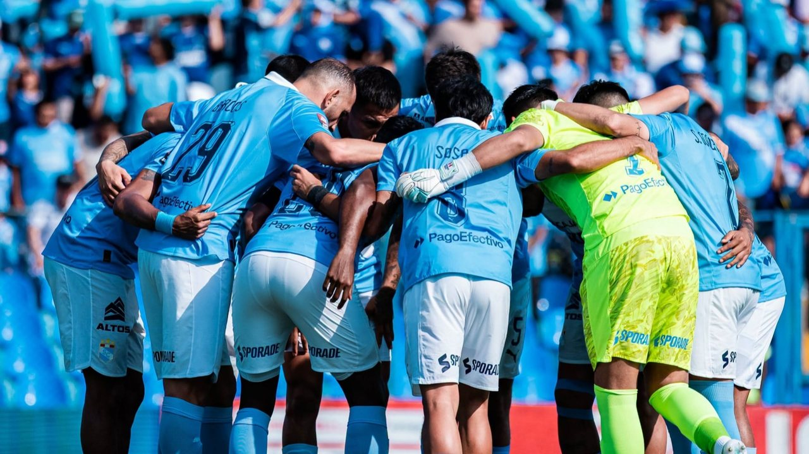

Luiggi Yarasca, expareja de Florcita Polo, ofreció una entrevista a Magaly Medina para responder sobre la denuncia que hay en su contra por presunta agresión física y psicológica. Durante la entrevista en el programa de “Magaly TV, la firme”, Medina insistió en conocer la explicación del empresario sobre las lesiones.



Luiggi Yarasca, expareja de Florcita Polo, ofreció una entrevista a Magaly Medina para responder sobre la denuncia que hay en su contra por presunta agresión física y psicológica. Durante la entrevista en el programa de “Magaly TV, la firme”, Medina insistió en conocer la explicación del empresario sobre las lesiones.
Ron De Santis anunció que convocará una sesión extraordinaria para implementar la Enmienda 3, respaldada en las urnas el 3 de noviembre, y dejar encaminada su aplicación antes de abandonar el cargo en enero de 2027.
Ejecutivos y empresas ajustan sus esquemas de remuneración para atraer y retener talento en Perú. Uno de los principales resultados de la Encuesta de Remuneración Total (TRS), Perú 2026, elaborada por Marsh, firma global de servicios profesionales, es que la remuneración base anual aumentó 2 por ciento en promedio respecto de 2025.
“Los jóvenes de Junín tendrán programas específicos en el plan de gobierno de Fernando Orihuela Rojas”, anunció el candidato regional de Podemos Perú. “Nuestros jóvenes necesitan que sus autoridades les den oportunidades para desarrollarse en la vida académica, laboral y empresarial.
Luis Galarreta, se refirió al trabajo que desempeña el ministro del Interior. Al ser consultado si se evalúan cambios en el Gabinete, el premier descartó esta posibilidad.
Las lluvias que se registraron desde el 9 de noviembre hasta la madrugada de hoy, 10 de noviembre, causaron aniegos en calles de Villa El Salvador y otros distritos de Lima Sur.
Trujillo: Obra inconclusa y vulnerable ante lluvias intensas Un equipo de Contraloría ha advertido que el expediente técnico del corredor vial Trujillo Huanchaco no comprende un drenaje longitudinal (cunetas), a pesar de que hay puntos críticos de aniego ante precipitaciones asociadas al fenómeno El Niño.
‘El paradero de la risa’ encabezó las cifras, seguido por ‘El Reventonazo’. ‘El Reventonazo de la Chola ’ volvió a destacar en el rating del sábado y, con 10.9 puntos, se ubicó por encima de ‘ Yo soy’, ‘JB Noticias’ y ‘El show de Edwin’, según las cifras proporcionadas para esta nota.
Piura: Incendio deja un fallecido y tres casas reducidas a cenizas en Paita Autoridades iniciaron las investigaciones para determinar la causa del incendio.
Cada edición dura menos de dos minutos. En la web tienes el resumen de cada historia y el enlace directo al medio original para leerla completa.
Conoce Olfatecho →